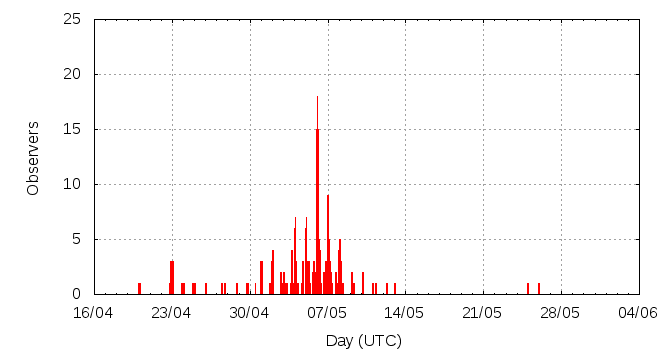

[ www.imo.net ]
This page shows automated results of the eta-Aquariids 2011, based on visual observations by volunteers astronomers collected through the report form of the International Meteor Organization (IMO). The information on this page is generated automatically; for scientific use please refer to manual analyses published in scientific journals (such as WGN). Send your feedback regarding this page to Geert Barentsen.
Page contents:
Page generated: 2011 September 29 at 10:42 UTC.
The graph below shows the ZHR (Zenithal Hourly Rate), which is the number of meteors an observer would see under a very dark sky with the radiant of the shower in zenith.
ZHRmax = 63 based on 928 eta-Aquariids reported in 273 intervals, assuming population index r = 2.4

| Time (UTC) | Solarlon | nINT | nETA | ZHR | Particle density | |
|---|---|---|---|---|---|---|
| 2011-04-25 02:00 | 34.381 | 1 | 1 | 59 | ±42 | 107 / 109·km3 |
| 2011-04-27 10:41 | 36.681 | 6 | 5 | 6 | ±2 | 11 / 109·km3 |
| 2011-04-29 14:45 | 38.791 | 8 | 12 | 12 | ±3 | 22 / 109·km3 |
| 2011-05-02 06:40 | 41.378 | 6 | 13 | 18 | ±5 | 33 / 109·km3 |
| 2011-05-03 09:00 | 42.443 | 16 | 36 | 34 | ±6 | 62 / 109·km3 |
| 2011-05-03 18:46 | 42.838 | 6 | 42 | 29 | ±4 | 53 / 109·km3 |
| 2011-05-04 02:54 | 43.167 | 11 | 43 | 29 | ±4 | 53 / 109·km3 |
| 2011-05-04 09:49 | 43.446 | 15 | 36 | 29 | ±5 | 53 / 109·km3 |
| 2011-05-04 18:54 | 43.813 | 4 | 40 | 39 | ±6 | 71 / 109·km3 |
| 2011-05-05 03:07 | 44.145 | 11 | 37 | 27 | ±4 | 49 / 109·km3 |
| 2011-05-05 07:02 | 44.303 | 16 | 35 | 32 | ±5 | 58 / 109·km3 |
| 2011-05-05 16:24 | 44.681 | 10 | 37 | 28 | ±5 | 51 / 109·km3 |
| 2011-05-05 20:26 | 44.844 | 7 | 35 | 38 | ±6 | 69 / 109·km3 |
| 2011-05-06 01:49 | 45.062 | 24 | 40 | 27 | ±4 | 49 / 109·km3 |
| 2011-05-06 05:16 | 45.201 | 7 | 38 | 63 | ±10 | 115 / 109·km3 |
| 2011-05-06 07:47 | 45.303 | 16 | 35 | 41 | ±7 | 75 / 109·km3 |
| 2011-05-06 17:15 | 45.685 | 8 | 38 | 43 | ±7 | 78 / 109·km3 |
| 2011-05-06 22:18 | 45.889 | 15 | 37 | 54 | ±9 | 98 / 109·km3 |
| 2011-05-07 02:20 | 46.051 | 10 | 35 | 44 | ±7 | 80 / 109·km3 |
| 2011-05-07 05:02 | 46.160 | 14 | 67 | 40 | ±5 | 73 / 109·km3 |
| 2011-05-07 12:40 | 46.468 | 4 | 37 | 50 | ±8 | 91 / 109·km3 |
| 2011-05-08 01:27 | 46.984 | 10 | 37 | 45 | ±7 | 82 / 109·km3 |
| 2011-05-08 04:58 | 47.126 | 8 | 60 | 53 | ±7 | 97 / 109·km3 |
| 2011-05-08 14:27 | 47.508 | 15 | 40 | 48 | ±7 | 87 / 109·km3 |
| 2011-05-09 10:29 | 48.316 | 9 | 35 | 31 | ±5 | 56 / 109·km3 |
| 2011-05-10 04:29 | 49.041 | 8 | 52 | 48 | ±7 | 87 / 109·km3 |
| 2011-05-11 18:20 | 50.565 | 4 | 4 | 11 | ±5 | 20 / 109·km3 |
| 2011-05-13 01:53 | 51.834 | 2 | 0 | 11 | ±11 | 20 / 109·km3 |
| 2011-05-25 12:18 | 63.805 | 2 | 1 | 14 | ±10 | 25 / 109·km3 |
The reported intervals are automatically added together into the bins shown above, based on the number of meteors and the distribution of the intervals. For each bin, the following parameters are computed:
Data has been received from 50 observers in 20 countries. Thank you for your efforts!
Note: click on the map for an interactive version.

| Observer | Country | Teff | nETA |
|---|---|---|---|
| Tomasz Adam | Poland | 1.25h | 1 |
| Salvador Aguirre | Mexico | 1.50h | 6 |
| Alexandre Amorim | Brazil | 13.33h | 79 |
| Jure Atanackov | Slovenia | 4.05h | 0 |
| Pierre Bader | Germany | 10.10h | 12 |
| Janos Bakos | Hungary | 1.93h | 11 |
| Felix Bettonvil | Netherlands | 16.11h | 164 |
| Simiao Cheng | China | 0.50h | 1 |
| Tim Cooper | South Africa | 2.00h | 13 |
| Paul Craft | Australia | 3.44h | 62 |
| Anderson Dantas | Brazil | 2.00h | 20 |
| Frank Enzlein | Germany | 1.17h | 2 |
| Balazs Fodor | Hungary | 0.94h | 6 |
| William Godley | United States | 1.33h | 2 |
| Lew Gramer | United States | 1.23h | 14 |
| Wayne T. Hally | United States | 7.05h | 8 |
| Phil Hart | Australia | 1.45h | 10 |
| Vilem Heblik | Czech Republic | 4.8h | 12 |
| Di Hu | China | 2.9h | 7 |
| Visnja Jankov | Serbia | 1.50h | 4 |
| Paul Jones | United States | 1.25h | 6 |
| Javor Kac | Slovenia | 4.10h | 14 |
| Lance Kelly | Australia | 6.25h | 43 |
| Janez Kos | Slovenia | 1.00h | 4 |
| Jakub Koukal | Czech Republic | 20.59h | 55 |
| Roman Kovalyk | Italy | 2.50h | 5 |
| Peter Van Leuteren | Netherlands | 1.92h | 2 |
| Anna S. Levina | Israel | 0.81h | 12 |
| Pengkai Liu | China | 1.70h | 4 |
| Qiang Ma | China | 1.00h | 4 |
| Adam Marsh | Australia | 15.23h | 149 |
| Pierre Martin | Canada | 1.10h | 12 |
| Koen Miskotte | Netherlands | 8.85h | 4 |
| Nilesh Puntambekar | India | 1.00h | 13 |
| Jurgen Rendtel | Germany | 5.66h | 9 |
| Joao Santos | Brazil | 0.79h | 12 |
| Branislav Savic | Serbia | 1.50h | 5 |
| Sergei Schmalz | Germany | 14.70h | 5 |
| Filip Stanisavljevic | Serbia | 1.34h | 3 |
| Con Stoitsis | Australia | 2.71h | 10 |
| Tao Su | China | 1.42h | 16 |
| Richard Taibi | United States | 1.35h | 3 |
| Csilla Tepliczky | Hungary | 1.41h | 10 |
| Istvan Tepliczky | Hungary | 1.46h | 5 |
| Michel Vandeputte | Belgium | 11.58h | 4 |
| Thomas Weiland | Austria | 17.11h | 190 |
| Xijun Wu | China | 0.92h | 4 |
| Chris Wyatt | Australia | 0.65h | 8 |
| Marko Zivanovic | Serbia | 1.66h | 5 |
| Predrag Zivkov | Serbia | 1.50h | 0 |
Create your own analysis. The files below can be opened using Excel:
eta2011_rate.csv (number of meteors per interval per observer)
eta2011_magn.csv (number of meteors per magnitude bin per observer)
The information on this page may be distributed freely provided credit is given to the International Meteor Organization (IMO) and, when possible, to the individual observers. The computer facilities to generate this page are provided by ESA/RSSD and Armagh Observatory.
References: